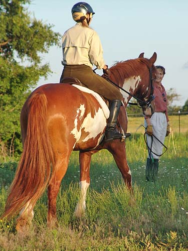
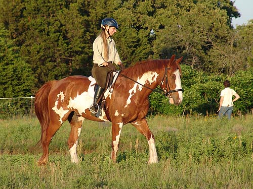
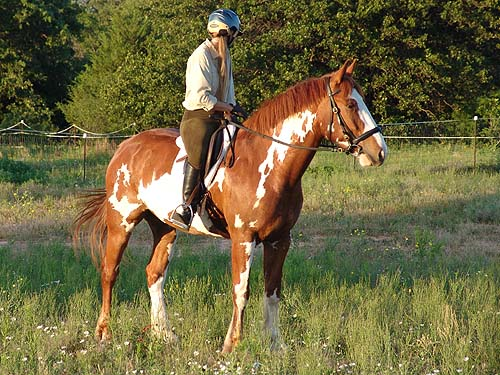
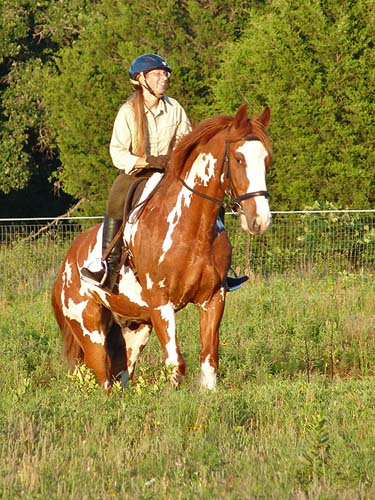
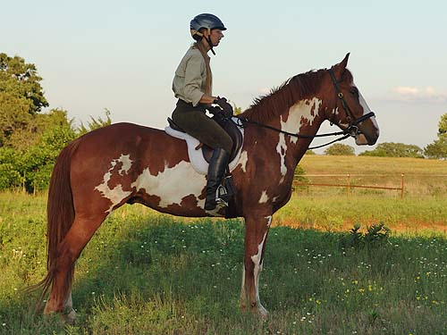
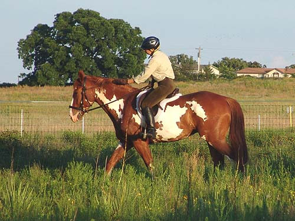
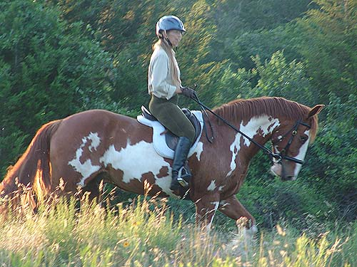
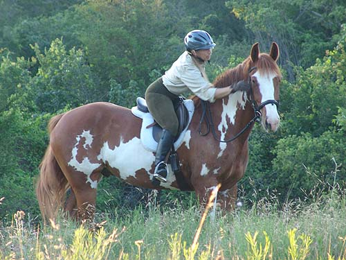
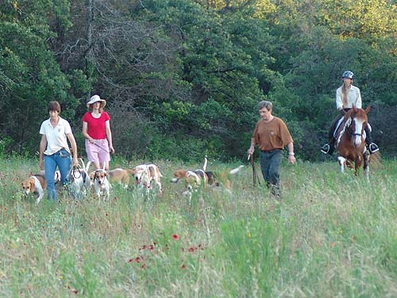
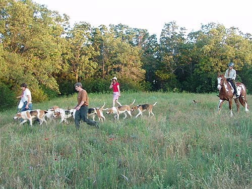

Nero Roading Out I was back in town after my adventures
in VA with
Thuy, so I grabbed Nero to head out roading.
The bugs were
awful, but he was quite good about it.
A bit of head tossing and
leg stomping, but nothing that made me
need to get off. After
a couple of weeks off, he was very forward
and willing to trot with
just a little leg from me. He obviously
likes working out on the trails
more than in the arena....

Such a lush red color.

Walking around while the hounds worked.

I like that he tends to be good at
parking.

Climbing up the ravine.

For some reason my posture tends to
be better on the taller horses. He's definitely not as wide as Thuy...

Hitting at mosquitos on his face with
the whip.

Guarding the edge of the property
while the hounds walked out, we ran into
more and more bugs.
I let him walk around a little to try
and keep them from bothering us so much.

Reaching to wipe some mosquitos
off his face.

Following along as the hounds headed
back in.

He's got a lovely walk, but
to stay a good distance behind we'd have to do a lot of half halting or
stopping and then continuing on. It's something I've always seen out roading.
It can be a little difficult for horses who like to walk out.